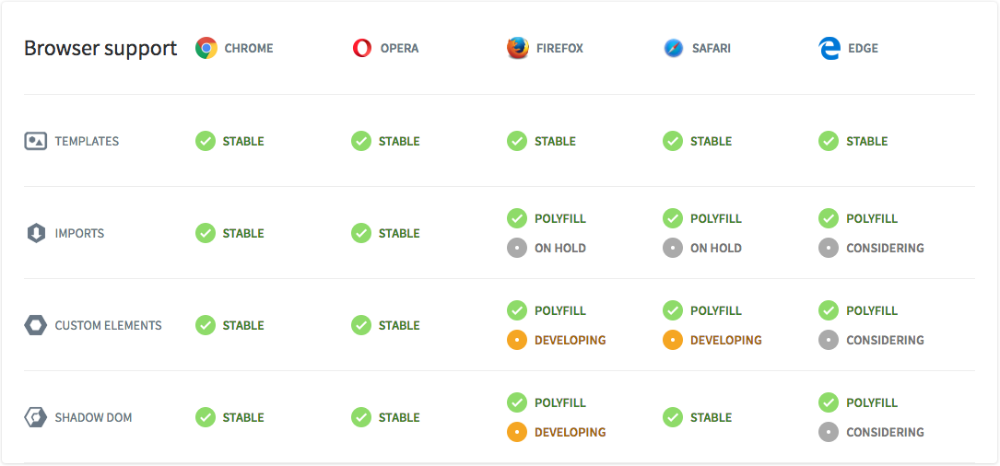
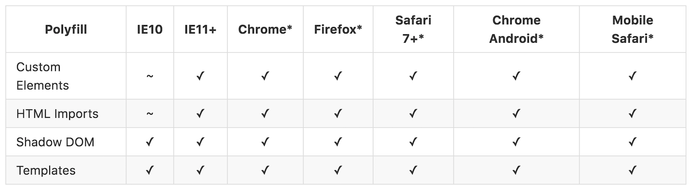

Building an enterprise modular design system
with Bootstrap 4 and Web Components
Patrick Riley, Red Hat User Experience Designer
Introduction
Topics Covered
- Web Component Basics & Web Component Standards
- Web Component Framework Interoperability & React / Angular2 Demos
- Advanced Framework Concepts & Javascript Patterns
- Modular CSS & Atomic Design
- Patternfly & Patternfly Bootstrap 4 Demo
"Powering great user experiences through open source design"

The future of the web...
"Custom Elements give us a built-in component model without requiring framework lock-in" - Rob Dodson
- New browser standards aid in native component development
- Reusing components from different frameworks is overly challenging
- The jQuery story is ending
- Web components make excellent leaf nodes
Web components are...
- Composable: combine them together to create new experiences
- Encapsulated: isolate markup, styles, and behavior
- Reusable: easy to extend
Web Component specifications
Custom Elements
Browser APIs to define new HTML elements
HTML Templates
The <template> tag now allows documents to contain inert chunks of DOM
Shadow DOM
Encapsulated component DOM and styling
HTML Imports
Declarative methods of importing HTML documents into other documents
Custom Elements
Define new elements with the customElements global.
/* my-element.js */
class MyElement extends HTMLElement {
// This gets called when the HTML parser sees your tag
constructor() {
super(); // always call super() first in the ctor.
this.msg = 'Hello, World!';
}
// Called when your element is inserted in the DOM or
// immediately after the constructor if it’s already in the DOM
connectedCallback() {
this.innerHTML = `${this.msg}
`;
}
}
// This registers your new tag and associates it with your class
window.customElements.define('my-element', MyElement);
Custom Elements
v0 Lifecycle
| Callback | Called when |
|---|---|
| createdCallback | an instance of the element is created |
| attachedCallback | an instance was inserted into the document |
| detachedCallback | an instance was removed from the document |
| attributeChangedCallback(attrName, oldVal, newVal) | an attribute was added, removed, or updated |
v1 Lifecycle
| Callback | Called when |
|---|---|
| constructor | an instance of the element is created or upgraded. |
| connectedCallback | called every time the element is inserted into the DOM. |
| disconnectedCallback | called every time the element is removed from the DOM. |
| attributeChangedCallback(attrName, oldVal, newVal) | an attribute was added, removed, or updated. note: only attributes listed in the observedAttributes property will receive this callback. |
| adoptedCallback | the custom element has been moved into a new document (e.g. someone called document.adoptNode(el)). |
Custom Elements
You can also extend native HTML elements. The primary benefit is to gain all of their features (things like DOM properties, methods, and accessibility features).
class FancyButton extends HTMLButtonElement {
constructor() {
super();
this.addEventListener('click', e => this.drawRipple(e.offsetX, e.offsetY));
}
// Material design ripple animation.
drawRipple(x, y) {
let div = document.createElement('div');
div.classList.add('ripple');
this.appendChild(div);
div.style.top = `${y - div.clientHeight/2}px`;
div.style.left = `${x - div.clientWidth/2}px`;
div.style.backgroundColor = 'currentColor';
div.classList.add('run');
div.addEventListener('transitionend', e => div.remove());
}
}
customElements.define('fancy-button', FancyButton, {extends: 'button'});
Custom Elements
Consumers can utilize the element by declaring it in their HTML: jsfiddle
<button is="fancy-button">Fancy button!</button>
or by creating an instance in Javascript:
let button = document.createElement('button', {is: 'fancy-button'});
button.textContent = 'Fancy button!';
document.body.appendChild(button);
or using the new operator:
let button = new FancyButton();
button.textContent = 'Fancy button!';
document.body.appendChild(button);
HTML Templates
The <template> element allows you to declare fragments of DOM which are parsed, inert at page load, and can be activated later at runtime. jsfiddle
<template id="element-template">
<style>
p { color: orange; }
</style>
<p>I'm in Shadow DOM. My markup was stamped from a <template>.</p>
</template >
Shadow DOM
A new way to encapsulate styles, giving you functional boundaries between DOM subtrees. jsfiddle
(function(){
let elementTemplate = doc.querySelector('.element-template');
class MyElement extends HTMLElement {
attachedCallback() {
/* Create a new Shadow Root for your element */
this.createShadowRoot();
/* append your element's template */
this.shadowRoot.appendChild(document.importNode(elementTemplate.content, true));
}
}
})();
HTML Imports
Provide a new means to include HTML documents inside other documents. Now you can load your component's HTML, JS, and CSS in a single file. jsfiddle
Why do we need them?
- <iframe>s are difficult to style, frustrating to script with, and don't give us the same context.
- AJAX loading everything in large bundles & minified scripts just feels wrong. It doesn't give us composable pieces and overcomplicates dependency trees.
- Approaching HTTP/2 standards and server push are a perfect fit for HTML Imports.
<head>
<link rel="import" href="/path/to/imports/my-element.html">
</head>
Framework Interoperability
Web components can easily be consumed in your framework using an HTML import, script tag, or ES6 module import.
Angular2
Consuming <pf-tabs> in Angular2: jsfiddle
React
Consuming <pf-tabs> in React: jsfiddle
Framework Extensions (shims)
Sometimes it is desirable to consume components via framework shims. jsfiddle
Shims can help with the following:
- Making the component feel like a framework component to the consumer
- Two way binding
- Dispatching custom events
- Handling framework mutations
- Imposing type restrictions
- Complex components
Web Component Browser Support

Polyfills to the rescue!

Patternfly Webcomponents Demo
Patternfly Webcomponents Site
Demo Apps
Some web component frameworks...
ReactReactive Elements |
AureliaAurelia
|
PolymerPolymer Elements
|
Onsen UIOnsen Elements
|
X-TagsX-Tags Elements |
BosonicBosonic Elements |
Framework Essentials
Frameworks often provide opinionated solutions for common problems.
Some Framework Commonalities
- Data binding
- Observing changes to data or state, typically via the Observer pattern
- Handling and firing events
- Url Routing
- Providing a common set of UI widgets and components
Events
Javascript's CustomEvent interface can be used to pass messages from your custom element to the outside world.
// fires when our element is attached to the DOM
attachedCallback() {
this.addEventListener('click', (e) => {
var eventObj = new CustomEvent('selected', {
detail: this.username
});
// fire custom event
this.dispatchEvent(eventObj);
});
}
Example:
Data Binding
To emulate data binding in your component, simply use Object.defineProperty.
/* Creates a property for two-way binding */
bindProperty(obj, property, domElem, domProp) {
Object.defineProperty(obj, property, {
get: function() { return domElem[domProp]; },
set: function(newValue) { domElem[domProp] = newValue; },
configurable: true
});
}
Example:
Polymer data binding (under the hood)
Observables & the Observer Pattern
Defines a one-to-many dependency between objects so that when one object changes state, all dependents are notified and updated automatically.
function observable(value) {
var listeners = [];
function notify(newValue) {
listeners.forEach(function(listener){ listener(newValue); });
}
function accessor(newValue) {
if (arguments.length && newValue !== value) {
value = newValue;
notify(newValue);
}
return value;
}
accessor.subscribe = function(listener) { listeners.push(listener); };
return accessor;
}
The Observer Pattern (cont.)
var a = observable(3), b = observable(2);
var c = observable(a() + b());
a.subscribe(function(){ c(a() + b()); });
b.subscribe(function(){ c(a() + b()); });
console.log(c()); // 5
a(10);
console.log(c()); // 12
b(7);
console.log(c()); // 17
Example:
Angular2 Observers/EventEmitters in RxJS and React Observers in Flux (observers also used in Redux)
Virtual DOM
React uses a very efficient "diffing" algorithm for mutating the DOM only when necessary. It creates a lightweight tree from Javascript objects that mimic a DOM tree.
There are libraries which can help if you want to imitate Virtual DOM in custom elements.
- SkateJS (4kb) makes uses of Google's Incremental DOM.
Skate JS
A library built on top of the W3C web component standards which aids in rendering and focuses on maintaining a small footprint.
- Render an entirely new virtual DOM tree in memory.
- Diff the tree against the last known virtual DOM tree and apply changes to the physical DOM.
- While creating the new virtual DOM tree, walk along the existing tree and find changes as you go. Allocate no memory if there is no change. If there is, mutate the existing tree and apply the diff to the phyiscal DOM.
- Examples:
Atomic Design
Design methodology created by Brad Frost to promote consistency and cohesion in modular design systems.
Improving CSS Modularity
To improve modularity in CSS, we've focused on four main goals:
- Importing component styles separately (via SASS imports)
- Avoiding conflicts (via CSS prefixes)
- Improving legibility via BEM naming conventions
- Using a flattened structure with shallow selectors
Separating Imports
Separating imports allows the consumer to cherry pick styles. We also order imports more effectively using Harry Robert's Inverted Triangle CSS approach.
// Variables, Mixins, Fonts, Resets
@import "pf-variables";
@import "pf-mixins";
@import "pf-icons";
@import "pf-fonts";
@import "node_modules/bootstrap/scss/normalize";
// Basics
@import "node_modules/bootstrap/scss/buttons";
@import "pf-buttons";
// Components
@import "pf-card";
// Templates
@import "pf-card-view";
Avoiding Conflicts
To avoid conflicts, all classes associated with Patternfly are prefixed with the global namespace "pf-".
// Base styles
.card {
@include box-shadow($pf-box-shadow-md);
}
// Although .pf-card is a modifier of bootstrap .card, I am treating it as a
// block element. Nesting classes keep the code DRY and overwrite bootstrap defaults.
.pf-card {
border: none;
box-shadow: none;
.card-header{
background: $pf-card-cap-bg;
border-bottom-color: $pf-card-border-color;
padding: $pf-spacer-lg;
.card-title { margin: 0; }
}
}
Block Element Modifier
To improve modularity and legibility, we use BEM naming conventions.
- Block is the primary component block, such as .pf-card
- Element is the child of the primary block, such as .pf-card__checkbox
- Modifier is a variation of a component style, such as .pf-card--accented
.pf-card__checkbox {
width: $pf-spacer-xxl;
height: $pf-spacer-xxxxl;
text-align: center;
padding-top: $pf-spacer-md;
}
.pf-card--accented { border-top: 2px solid $pf-color-blue-300; }
Keeping CSS Flat
We use shallow selectors when possible to keep specificity low. There is no hard rule (at times we have to increase specificity to override Bootstrap), but when possible, this makes component customization easier for downstream consumers.
// GOOD
.pf-card__checkbox {
width: $pf-spacer-xxl;
height: $pf-spacer-xxxxl;
}
.pf-card--accented { border-top: 2px solid $pf-color-blue-300; }
// BAD
.pf-card {
.pf-card__checkbox {
width: $pf-spacer-xxl;
height: $pf-spacer-xxxxl;
}
.pf-card--accented { border-top: 2px solid $pf-color-blue-300; }
}
Patternfly CSS Demo
Patternfly Atomic CSS with Pattern Lab
Human Cache Memory
"Consistentency is the most powerful usability principal, when things always behave the same, users don't have to worry about what will happen. Instead, they know what will happen based on earlier experiences." - Jakob Nielsen
The Gold Standard
A good checklist to review before submitting your web component...
Ask yourself questions like...
- Are dependencies expressed (i.e. in Bower or NPM)?
- Is the DOM structure meaningful?
- Will the component respond to runtime changes in its content?
- Should the element support focus via Tab key or support other keyboard access?
- Is the styling presentable, extendable, responsive?
- Is the element API documented?
- Is the network and render performance efficient?
- Are strings, currencies, and dates localizable?
Patternfly Next
The next iteration of Patternfly will introduce a more modular approach.
- Bootstrap 4, SASS, and Block Element Modifier (BEM) Conventions
- Web Components (Custom Elements) for JS Behaviors
The Patternfly Community
We gladly welcome your UX, Design, and Dev ideas in our Patternfly community.
Thanks!
The Patternfly team would like to thank...
- @RedHatUXD, Red Hat
- @devnexus, Dev Nexus
- @brad_frost, Atomic Design author
- @rob_dodson, Google
Questions?
Link to presentation: http://bit.do/devnexus2017
Come visit us!
- Website: http://www.patternfly.org
- Twitter: https://twitter.com/patternfly_des
- Slack channel: https://patternfly.slack.com/
- Patternfly Mailing List: https://www.redhat.com/mailman/listinfo/patternfly
- Contribution Guide: https://www.patternfly.org/get-started/contribute/#_
Further Resources
- Atomic Design : Brad Frost, Atomic Design Principles
- WebComponents.org : an open community discussing web component best practices.